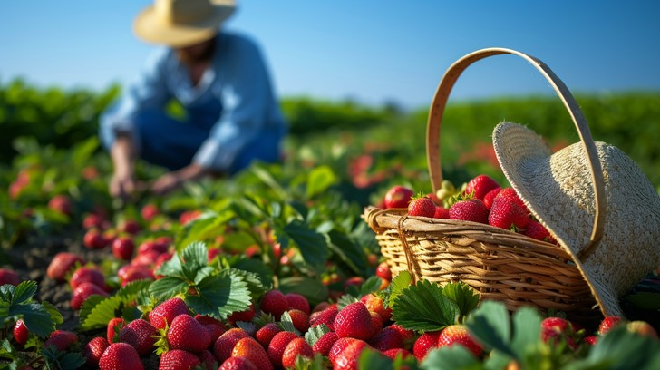
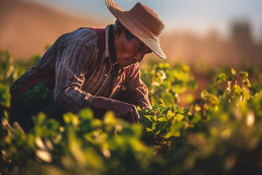

About Us
The Farmer Crop Monitoring System empowers farmers with real-time crop monitoring, weather insights, soil analysis, and smart irrigation solutions. Our goal is to improve productivity, reduce crop losses, and promote sustainable farming through innovative digital technology.
“ Technology is not just for the future it’s for better farming today.
Real Time Monitoring
Monitor crop, soil, and weather conditions in real-time.
Weather Forecasting
Get accurate weather forecasting and rainfall alerts.
Smart Irrigation
Schedule irrigation and track water usage efficiently.
Pest Detection
Detect pests and diseases early and take timely action.
Report & Analytics
Generate detailed reports and analyze farm performance.
Soil Monitor
Track soil moisture, temperature and nutrient levels.
Who We Are

We are dedicated to empowering farmers through smart technology and digital innovation. The Farmer Crop Monitoring System helps farmers monitor crop health, soil conditions, weather, irrigation, and pest activities in real time. Our goal is to support sustainable farming, improve productivity, and enable data-driven decision-making for better agricultural outcomes.
What We Do
Farmer First
Every solution we build is designed to improve farmers’ productivity.
Innovation
We embrace new technologies to create better solutions.
Integrity
We operate with honesty, transparency & trust.
Sustainability
We promote eco-friendly & sustainable farming.
Our Mission, Vision and Goals
Mission
To empower farmers with smart digital solutions that improve crop monitoring, optimize resource usage, and increase agricultural productivity through real-time insights and technology.
Vision
To become a trusted smart farming platform that promotes sustainable agriculture, innovation, and data-driven farming for a better future.
Our Goal
Our goal is to help farmers make informed decisions, reduce crop losses, improve yields, and simplify farm management through a centralized and user-friendly crop monitoring system.
